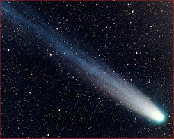

Wikipedia defines a comet as follows:
| A comet is a small body in the solar system that orbits the Sun and (at least occasionally) exhibits a coma (or atmosphere) and/or a tail - both primarily from the effects of solar radiation upon the comet's nucleus, which itself is a minor body composed of rock, dust, and ice. Comets' orbits are constantly changing: their origins are in the outer solar system, and they have a propensity to be highly affected (or perturbed) by relatively close approaches to the major planets. Some are moved into sun grazing orbits that destroy the comets when they near the Sun, while others are thrown out of the solar system forever. |  |